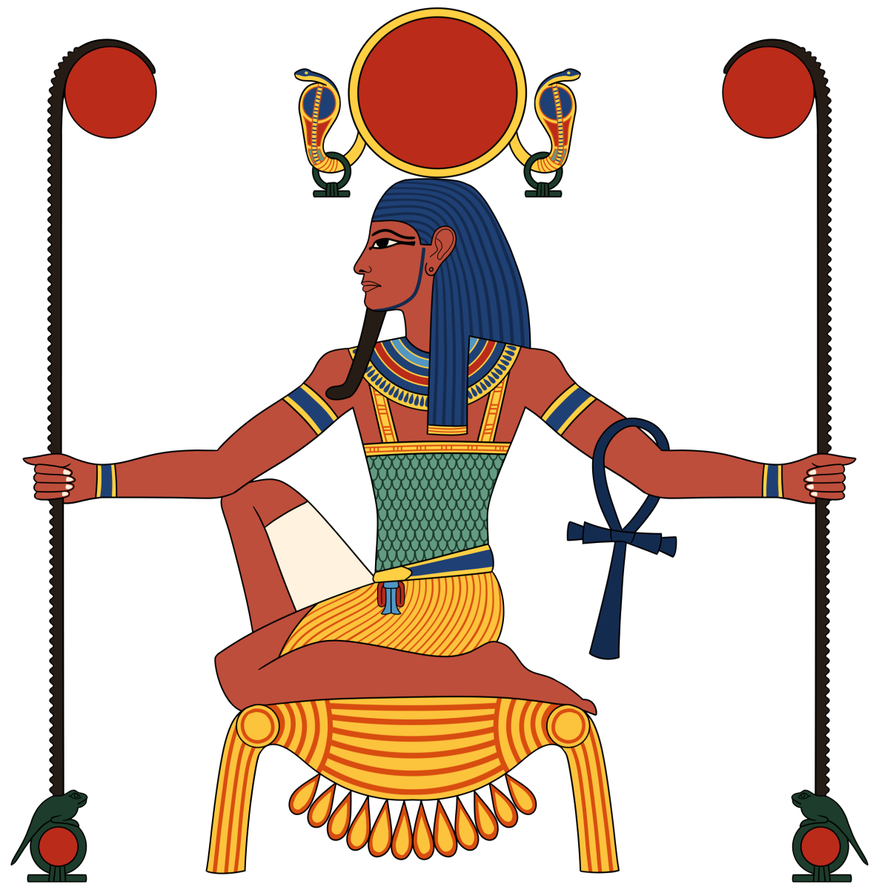

Re byl nejvyšší z egyptských bohů a vládl nad sluncem. Každý den putoval po obloze ve své velké sluneční bárce a řídil tak dny, měsíce i roční období. Faraoni ho uctívali natolik, že se považovali za jeho syny a stavěli mu svatyně po celém Egyptě. Re byl zobrazován s tělem muže a hlavou sokola s kotoučem slunce na hlavě, což symbolizovalo jeho moc nad denním světlem.
V noci putoval Re podsvětím v bárce nazývané „mesketet“ spolu s bohy a zesnulými králi. Jeho noční cesta byla plná nebezpečí, protože musel bojovat s hadem Apopem, který představoval zlo a chaos. Kdyby Re nezvítězil, slunce by nevyšlo. Apop však nikdy nesměl být zničen, protože by se tím narušila rovnováha mezi dobrem a zlem a vše by se navrátilo do Chaosu, ze kterého vzešel všechen život.
Tato dobrodružství dokazovala jeho odvahu a sílu, což mělo pro Egypťany velký význam, protože věřili, že Reovo vítězství zajišťuje rovnováhu a znovuzrození slunce každé ráno.